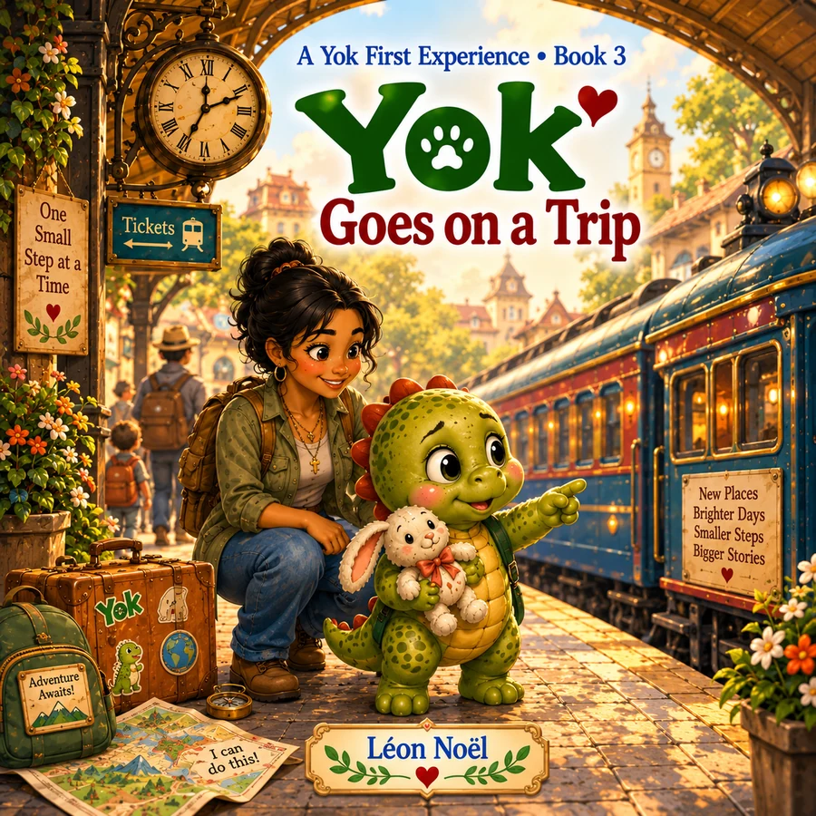

Yok First Experiences · Book 3
Yok Goes on a Trip
From packing a suitcase to holding a ticket, riding the train, finding a new room, and exploring an unfamiliar town, Yok takes travel one step at a time. A favorite Rabbit and a flexible plan make the unknown feel more manageable.
Coming Oct 23, 2026
Explore Yok First Experiences →About the story
Turn travel into a sequence of understandable, predictable steps.
From packing a suitcase to holding a ticket, riding the train, finding a new room, and exploring an unfamiliar town, Yok takes travel one step at a time. A favorite Rabbit and a flexible plan make the unknown feel more manageable.
This title belongs to Yok First Experiences, a six-book collection of gentle stories for young children and the grown-ups who read with them.
Why this story can help
Turn travel into a sequence of understandable, predictable steps.
Travel can feel like one giant unknown, but Yok experiences it as a series: pack, hold the ticket, ride, arrive, find the new room, explore. A familiar Rabbit and a flexible plan provide continuity while the surroundings change.
Good for
- Preparing for travel
- New rooms and unfamiliar places
- Using familiar objects for continuity
Looking for a screen-free follow-up? Browse the free printable library →
The Yok world